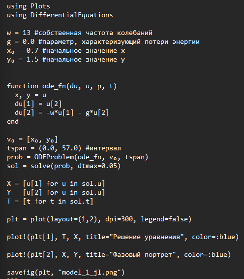
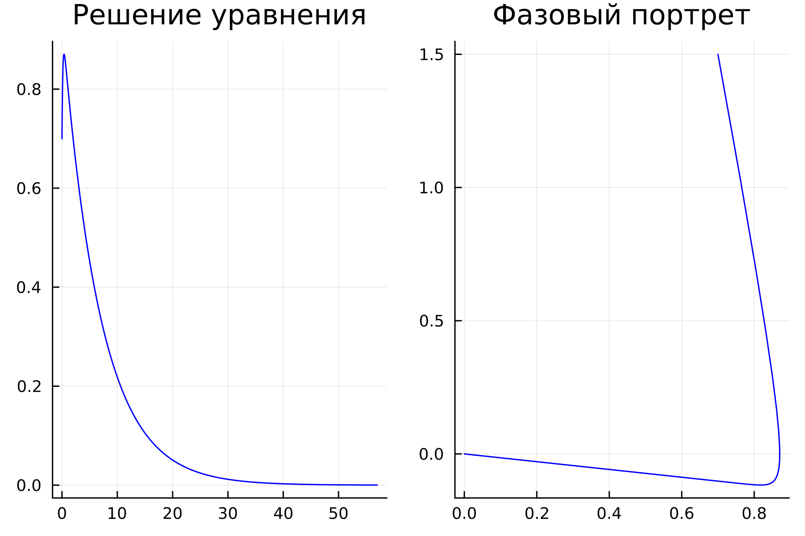
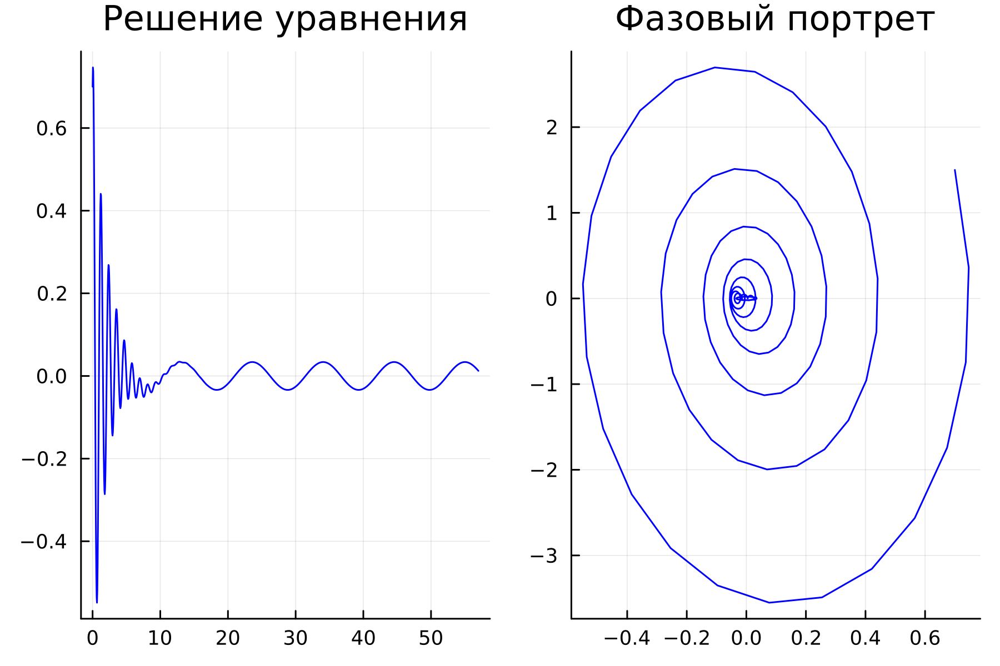
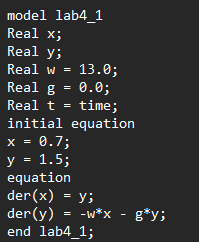
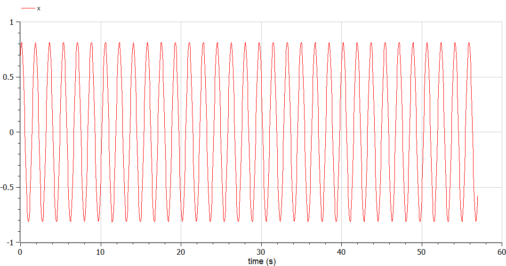
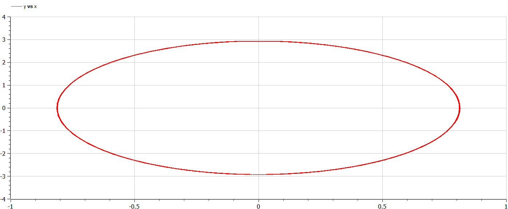
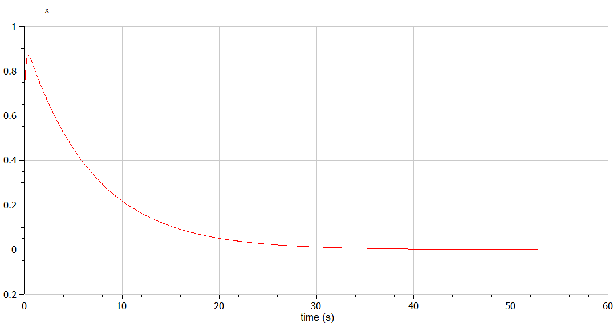
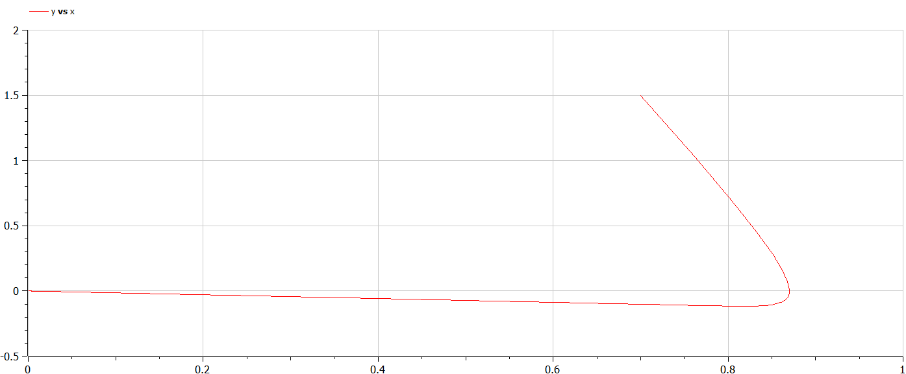
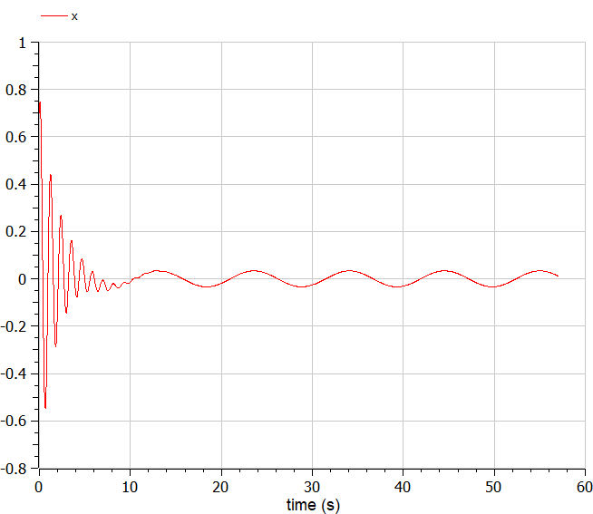
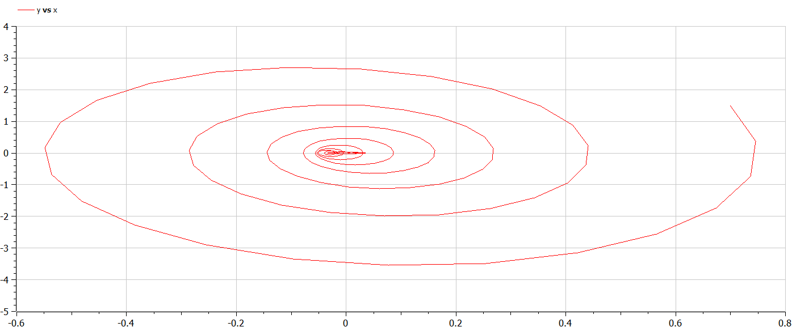

Изучить понятие гармонического осциллятора, построить фазовый портрет
и найти решение уравнения гармонического осциллятора.
Теоретическое введение
Гармонический осциллятор — система, которая при
выведении её из положения равновесия испытывает действие возвращающей
силы F, пропорциональной
смещению x.
Гармоническое колебание - колебания, при которых
физическая величина изменяется с течением времени по гармоническому
(синусоидальному, косинусоидальному) закону.
Задание
Мой вариант 18:
Постройте фазовый портрет гармонического осциллятора и решение
уравнения гармонического осциллятора для следующих случаев:
Колебания гармонического осциллятора без затуханий и без действий
внешней силы $\ddot{x}+13x=0$;
Колебания гармонического осциллятора c затуханием и без действий
внешней силы $\ddot{x}+7\dot{x}+x=0$
Колебания гармонического осциллятора c затуханием и под действием
внешней силы $\ddot{x}+\dot{x}+30x=sin(0.6t)$
На интервале t ∈ [0;57]
(шаг 0.05) с начальными условиями x0 = 0.7, y0 = 1.5.
Выполнение лабораторной
работы
Julia
(рис. [-@fig:010])

“На языке Julia”
Колебания
гармонического осциллятора c затуханием и без действий внешней силы
(рис. [-@fig:001])
“Решение уравнения и фазовый портрет для
колебания гармонического осциллятора без затуханий и без действий
внешней силы на языке Julia”
Колебания
гармонического осциллятора c затуханием и без действий внешней силы
(рис. [-@fig:002])

“Решение уравнения и фазовый портрет для
колебания гармонического осциллятора c затуханием и без действий внешней
силы на языке Julia”
Колебания
гармонического осциллятора c затуханием и под действием внешней
силы
(рис. [-@fig:003])

“Решение уравнения и фазовый портрет для
колебания гармонического осциллятора cc затуханием и под действием
внешней силы на языке Julia”
OpenModelica
(рис. [-@fig:011])

“На языке OpenModelica”
Колебания
гармонического осциллятора без затуханий и без действий внешней силы
(рис. [-@fig:004])
(рис. [-@fig:005])

“Решение уравнения для колебания
гармонического осциллятора без затуханий и без действий внешней силы на
языке Open Modelica”

“Фазовый потрет для колебания
гармонического осциллятора без затуханий и без действий внешней силы на
языке Open Modelica”
Колебания
гармонического осциллятора c затуханием и без действий внешней силы
(рис. [-@fig:006])
(рис. [-@fig:007])

“Решение уравнения для колебания
гармонического осциллятора c затуханием и без действий внешней силы на
языке Open Modelica”

“Фазовый потрет для колебания
гармонического осциллятора c затуханием и без действий внешней силы на
языке Open Modelica”
Колебания
гармонического осциллятора c затуханием и под действием внешней силы
(рис. [-@fig:008])
(рис. [-@fig:009])

“Решение уравнения для колебания
гармонического осциллятора cc затуханием и под действием внешней силы на
языке Open Modelica”

“Фазовый потрет для колебания
гармонического осциллятора c затуханием и под действием внешней силы на
языке Open Modelica”
Анализ
полученных результатов. Сравнение языков.
В итоге проделанной работы мы построили по три модели (включающих в
себя два графика) на языках Julia и OpenModelica. Построение моделей
колебания на языке OpenModelica занимает меньше строк, чем аналогичное
построение на Julia.
Вывод
В ходе выполнения лабораторной работы были построены решения
уравнения гармонического осциллятора и фазовые портреты гармонических
колебаний без затухания, с затуханием и при действии внешней силы на
языках Julia и Open Modelica.